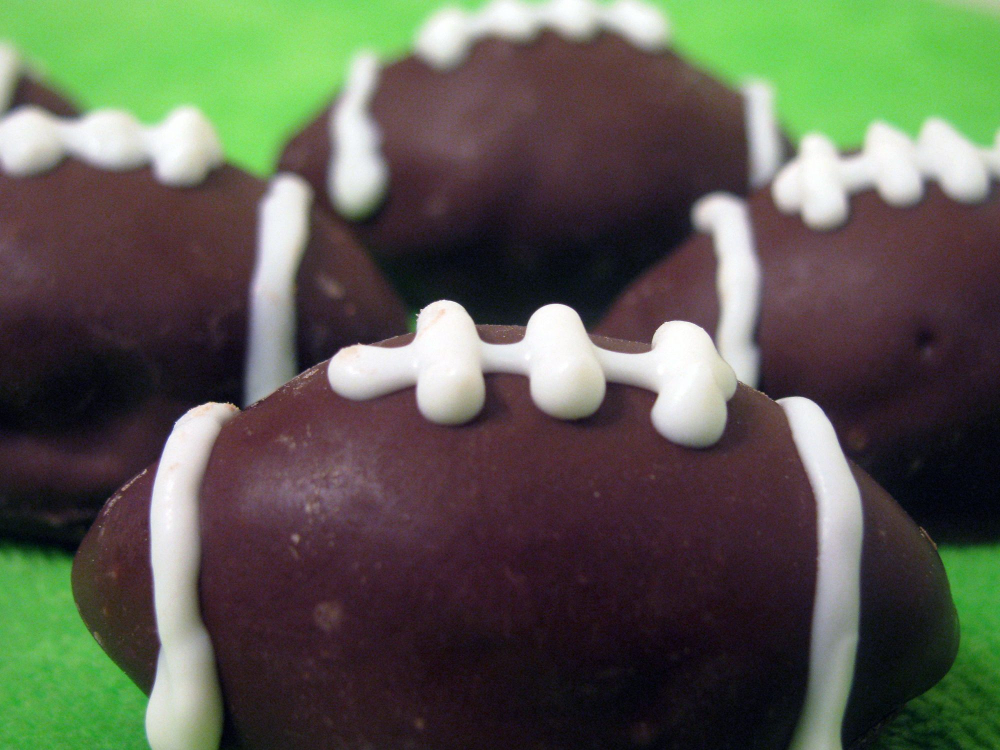

Cookie Balls

Description
Only 3 ingredients! Can decorate with chocolate jimmies or colored
sprinkles if done immediately after dipping.
Ingredients
- 1 pound chocolate sandwich cookies, crushed
- 1 (8 ounce) package cream cheese, softened
- 1 pound vanilla-flavored candy coating, melted
Steps
- In a large mixing bowl, combine crushed cookies and cream cheese to form a stiff
dough. Roll into balls and dip with a fork in melted candy coating.
Let rest on waxed paper until set.